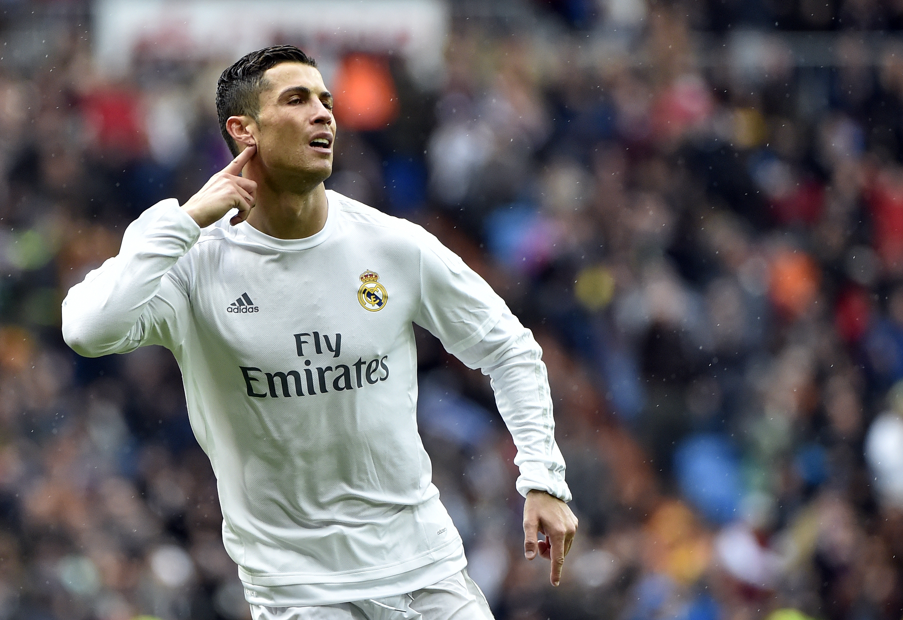

Real Madrid
O Real Madrid Club de Fútbol, mais conhecido como Real Madrid, é um dos clubes de futebol mais prestigiados do mundo. Fundado em 1902, o time espanhol tem uma longa história de sucesso e glórias. A começar pelo fato de que é o maior campeão da Liga dos Campeões da Europa, com 14 títulos em 17 finais disputadas no campeonato mais desejado de todo o planeta.
Fundado em 1902 como Madrid Football Club, o clube tem tradicionalmente usado uniformes brancos como mandante desde a sua criação. O título honorífico real foi concedido ao clube pelo rei Afonso XIII em 1920 juntamente com a coroa real no emblema.
O Real Madrid foi inspirado no Corinthian FC, um clube amador de Londres que excursionou pelo mundo no começo do século passado, para difundir a prática do futebol. Esse time também inspirou a criação de um dos maiores clubes do Brasil, o Corinthians.
A era de Cristiano Ronaldo(2009-2018)
Com a chegada de Cristiano Ronaldo em 2009, o Real Madrid entrou em uma nova fase de domínio no futebol mundial. Além de conquistar títulos do Campeonato Espanhol e da Copa do Rey, o clube venceu quatro edições da Liga dos Campeões em cinco anos (2014, 2016, 2017 e 2018).
A vitória na final de 2014 contra o Atlético de Madrid, conhecida como “La Décima”, marcou o retorno do clube ao topo do futebol europeu. Foi um dos mais importantes marcos na história dos merengues, que colocou Cristiano Ronaldo no topo dos maiores jogadores de todos os tempos.
